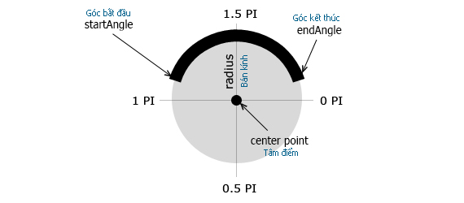

Vẽ đường Cung tròn Curves Arc
HTML5 Canvas Arc Tutorial
Để tạo ra một vòng cung với HTML5 Canvas, chúng ta có thể sử dụng method arc(). Đường cung được xác định bởi một điểm trung tâm, bán kính, một góc bắt đầu, góc kết thúc, và hướng vẽ. (hoặc chiều kim đồng hồ hoặc ngược chiều kim đồng hồ). Vòng cung có thẻ được định kiểu như thế nào nhở vào các thuộc tính linewidth, strokeStyle, lineCap.

Arc bao gồm 5 thông số:
arc(x, y, radius, startAngle, endAngle, anticlockwise)
- x, y : tọa độ tâm.
- radius : bán kính Vòng cung.
- startAngle : gốc bắt đầu tính bằng radian.
- endAngle : góc kết thúc tính bằng radian.
- anticlockwise : set hướng vẽ là ngược hay cùng chiều kim đồng hồ.
Test code HTML: